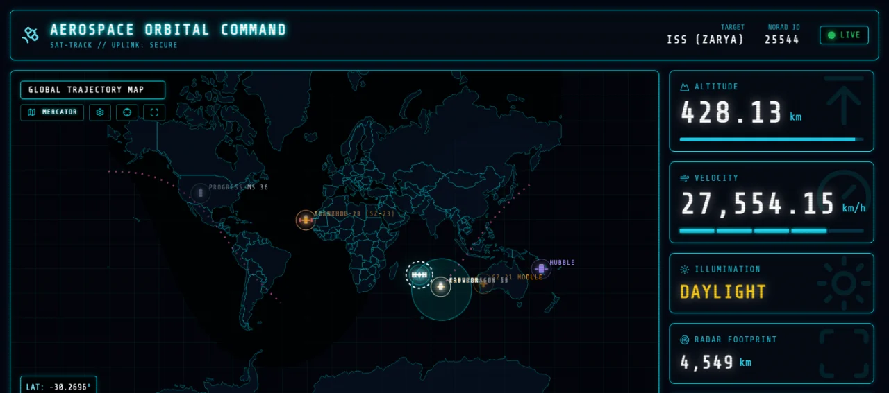

01What I built
I mapped position and telemetry into a single tracking interface.
02What it enables
Readers can relate an object’s reported state to its position on the map.
03Tools & methods
ProjectInterfaces
A browser interface that combines orbital position, telemetry and map overlays.

01What I built
I mapped position and telemetry into a single tracking interface.
02What it enables
Readers can relate an object’s reported state to its position on the map.
03Tools & methods